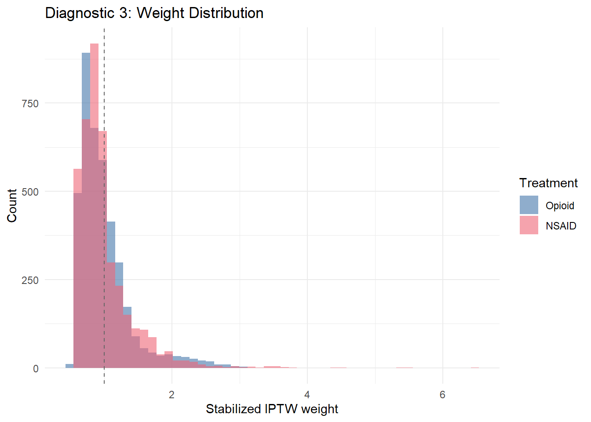
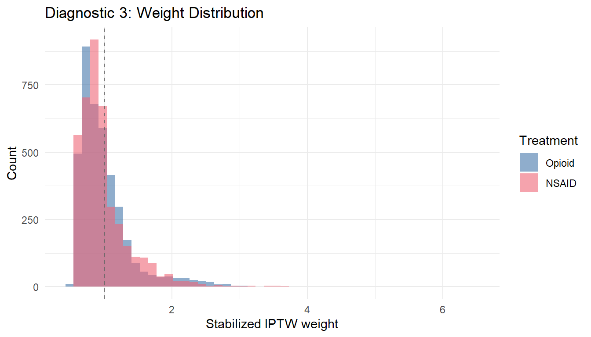
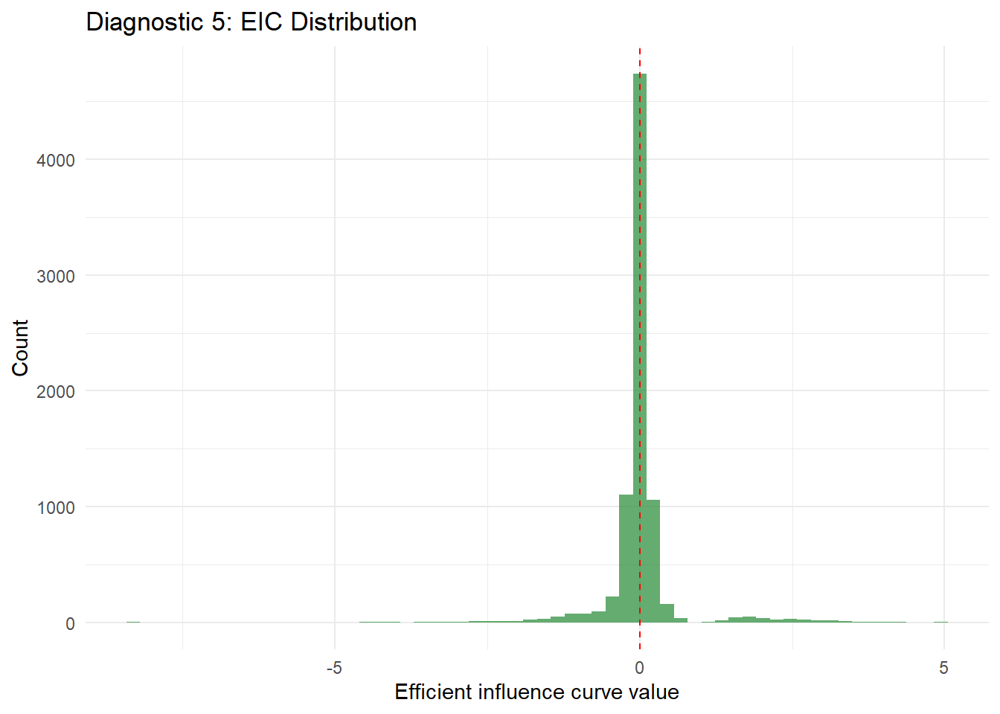
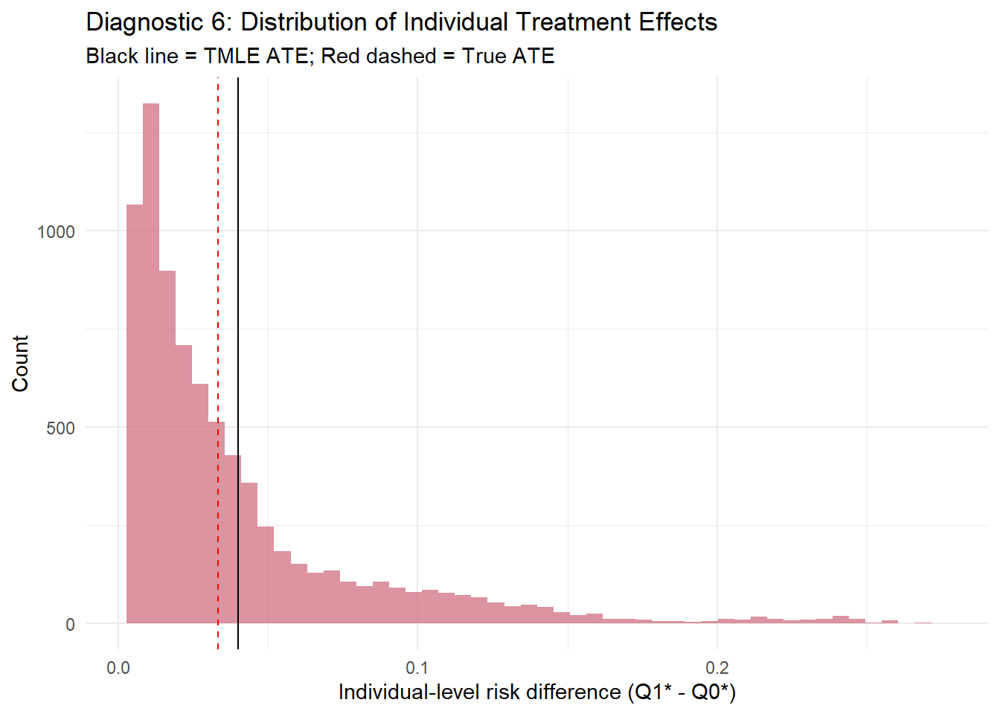
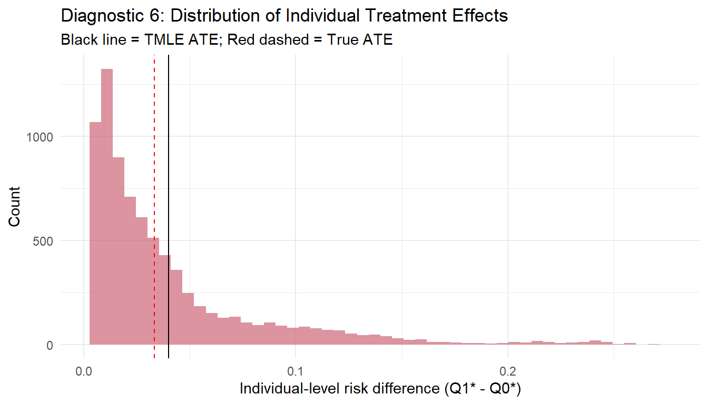

library(tidyverse)
# ============================================================
# LOCKED SEED — specified in the Statistical Analysis Plan
# ============================================================
set.seed(20260101)
n <- 8000
# --- Baseline confounders (claims-derived) ---
# Demographics
age <- round(runif(n, 18, 80))
male <- rbinom(n, 1, 0.45)
# Comorbidities (from diagnosis codes)
# CKD stage (0=none, 1=mild, 2=moderate, 3=severe)
ckd <- sample(0:3, n, replace = TRUE,
prob = c(0.70, 0.15, 0.10, 0.05))
diabetes <- rbinom(n, 1, plogis(-2.0 + 0.03 * age + 0.5 * (ckd > 0)))
hypertension <- rbinom(n, 1, plogis(-1.5 + 0.04 * age + 0.3 * male))
# Medication history
prior_nsaid <- rbinom(n, 1, 0.35)
prior_opioid <- rbinom(n, 1, 0.20)
ace_arb <- rbinom(n, 1, plogis(-1.8 + 0.8 * hypertension + 0.5 * diabetes))
# Healthcare utilization (proxy for overall health burden)
n_rx <- rpois(n, lambda = 3 + 0.05 * age + 2 * (ckd > 1) + diabetes)
n_visits <- rpois(n, lambda = 2 + 0.02 * age + ckd + diabetes)
# --- Treatment model ---
# NSAIDs are preferentially prescribed to:
# - younger patients
# - those without CKD (contraindication concern)
# - those with prior NSAID use (familiarity)
# - those without ACE/ARB use (drug interaction concern)
# Includes nonlinear age effect and interactions
lp_trt <- 0.3 +
-0.02 * (age - 50) +
-0.0005 * (age - 50)^2 +
-0.8 * (ckd >= 2) +
-0.3 * (ckd == 1) +
-0.2 * diabetes +
0.5 * prior_nsaid +
-0.3 * prior_opioid +
-0.4 * ace_arb +
-0.01 * n_rx +
0.15 * male +
0.3 * prior_nsaid * (ckd == 0) # interaction: prior NSAID use matters more without CKD
A <- rbinom(n, 1, plogis(lp_trt))
# --- Outcome model ---
# AKI risk depends on treatment and confounders
# True effect: NSAIDs moderately increase AKI risk
lp_out <- -4.5 +
0.45 * A + # true causal effect (harmful)
0.03 * (age - 50) +
0.0003 * (age - 50)^2 +
0.6 * (ckd == 1) +
1.2 * (ckd == 2) +
2.0 * (ckd >= 3) +
0.4 * diabetes +
0.3 * hypertension +
0.5 * ace_arb +
0.05 * n_rx +
0.25 * A * (ckd >= 2) + # interaction: NSAIDs more harmful with CKD
0.15 * A * ace_arb + # interaction: NSAIDs + ACE/ARB
-0.1 * male
Y <- rbinom(n, 1, plogis(lp_out))
dat <- tibble(
age, male, ckd, diabetes, hypertension,
prior_nsaid, prior_opioid, ace_arb,
n_rx, n_visits, A, Y
)16 Chapter 3.8: TMLE in the Clean-Room Framework for Pharmacoepidemiology
17 Chapter 3.8: TMLE in the Clean-Room Framework
Pre-specified, reproducible causal inference for regulatory pharmacoepidemiology
In many regulatory settings, analysts cannot freely explore the data. Post-marketing safety studies, multi-database pharmacoepidemiology collaborations, and distributed data network analyses often require a clean-room workflow: the analysis plan is pre-specified before data access, code is locked, and the analyst has minimal or no opportunity to iterate on model choices after seeing the data.
This is the opposite of typical exploratory data analysis — and it is where TMLE shines.
This chapter demonstrates how to implement TMLE in a clean-room regulatory context, using a motivating example inspired by the NSAIDs vs. opioids acute kidney injury (AKI) safety question.
Learning objectives
- Describe the clean-room workflow and why pre-specification matters in regulatory pharmacoepidemiology
- Implement a TMLE analysis with all modeling choices locked before data access
- Define a statistical analysis plan (SAP) that specifies the estimand, learner libraries, and positivity bounds
- Build a fully reproducible analysis script with version capture and audit trail
- Perform pre-specified sensitivity analyses (positivity truncation, learner library variation, negative controls)
- Interpret TMLE results in a regulatory decision-making context
Sources and scope
This chapter is educational. Causal conclusions depend on identification assumptions (e.g., consistency, exchangeability, positivity) and on diagnostic evidence that the data support the target estimand. When flexible machine learning is used for nuisance estimation, valid inference typically requires cross-fitting or a cross-validated TMLE variant, plus appropriate rate conditions.
18 1. Clinical Motivation
18.1 The Regulatory Question
A distributed research network (similar to the FDA Sentinel system) has flagged a potential safety signal:
Does initiation of prescription NSAIDs increase the 90-day risk of acute kidney injury compared to initiation of prescription opioids among adults with musculoskeletal pain?
This question arises in a post-marketing surveillance context where:
- Raw patient-level data cannot leave participating sites (privacy, legal, or contractual constraints)
- The analysis must be pre-specified in a Statistical Analysis Plan (SAP) before any data access
- Results must be reproducible — running the same code on the same data yields identical results
- The analyst cannot iterate on model specifications after seeing the data
- There is an audit trail documenting every analysis step
18.1.1 Key elements
- Target population: Adults aged 18-80 with a new musculoskeletal pain diagnosis initiating either NSAIDs or opioids
- Treatment: NSAID initiation (A = 1) vs. opioid initiation (A = 0)
- Outcome: AKI within 90 days (binary)
- Decision: Should the NSAID label carry a stronger AKI warning? Should prescribing guidelines be updated?
Why TMLE for Clean-Room?
Traditional regression-based analyses require the analyst to choose a single model specification — a process that invites data-dependent decisions. Every time an analyst looks at the data and adjusts a model, the pre-specification principle is compromised. TMLE with Super Learner sidesteps this problem entirely:
- Pre-specify a learner library, not a single model. The SAP lists the candidate algorithms. Cross-validation — not the analyst — picks the best combination. No post-hoc model selection is required.
- Double robustness protects you. Even if the outcome model or the treatment model is misspecified, the estimate remains consistent as long as at least one is correct. This is invaluable when you cannot iterate after seeing the data.
- Influence-curve inference is automatic. Valid standard errors come directly from the efficient influence curve — no bootstrap needed, no distributional assumptions beyond the nonparametric model.
- Full determinism. Given the same data, learner library, and random seed, the entire pipeline produces bit-identical results. Every run is reproducible.
- The audit trail writes itself. Cross-validated learner weights, the fluctuation parameter, and every diagnostic are logged as natural byproducts of the algorithm.
In short, TMLE turns the clean-room constraint from a limitation into a strength: the algorithm makes the decisions that the analyst is not allowed to make.
19 2. Clean-Room Workflow Overview
A clean-room analysis proceeds in distinct phases. Each phase has a clear purpose and strict boundaries. Before we walk through the details, here is the high-level roadmap:
Phase 1: Protocol Development (before data access)
Everything happens on paper before you touch the data. This is the foundation of the entire analysis.
- Define the causal question, DAG, and estimand
- Write the SAP specifying all analysis steps
- Pre-specify the Super Learner library
- Define all diagnostics that will be run
- Lock the analysis code in a version-controlled repository
Phase 2: Data Preparation (minimal data contact)
Data preparation follows pre-written scripts. The analyst executes queries but does not explore.
- Execute pre-written data extraction queries
- Apply inclusion/exclusion criteria
- Create analysis-ready dataset
- No exploratory analysis
Phase 3: Analysis Execution (locked code)
This is where the pre-specified TMLE pipeline runs. The analyst presses “go” and does not modify anything.
- Run the pre-specified TMLE pipeline
- Generate all pre-specified diagnostics
- No code modifications allowed
- Capture all output deterministically
Phase 4: Reporting
Results are interpreted according to pre-specified decision rules. Any deviation from the protocol is documented.
- Interpret results according to pre-specified rules
- Document any deviations from the protocol
- Maintain audit trail
We now walk through each phase.
20 3. Phase 1: Pre-Specified Protocol
20.1 3.1 Causal Question and Estimand
Before touching any data, we write down exactly what we want to estimate and why.
Question (plain language): What is the 90-day AKI risk if all eligible patients initiated NSAIDs, compared to if all eligible patients initiated opioids?
Estimand: Average Treatment Effect on the risk difference scale:
\[ \psi = E[Y(1)] - E[Y(0)] \]
where \(Y(1)\) is the potential AKI outcome under NSAID initiation and \(Y(0)\) under opioid initiation.
20.2 3.2 Causal Model (DAG)
Confounders (W):
age, sex, CKD stage, diabetes, hypertension,
prior NSAID use, prior opioid use, ACE/ARB use,
number of concomitant medications, healthcare utilization
W
/ \
v v
A -> YAll measured confounders \(W\) affect both treatment choice \(A\) and outcome \(Y\). The active comparator design (NSAID vs. opioid) helps control for confounding by indication — both groups have pain requiring treatment.
20.3 3.3 Assumptions
The causal identification assumptions must be stated and scrutinized before the analysis begins. These are the claims that no statistical method can verify from data alone.
Causal Assumptions — State Them Clearly, Question Them Honestly
Every causal estimate rests on untestable assumptions. In a clean-room analysis, these are locked into the protocol and cannot be revised after seeing results. Be explicit about where each assumption could fail:
- Consistency: Initiation of a new NSAID (or opioid) prescription, irrespective of specific agent within class. This assumes that within-class variation in drug choice does not meaningfully affect AKI risk.
- Exchangeability: Conditional on \(W\), treatment choice is independent of potential outcomes. This is the most fragile assumption. Unmeasured confounders — OTC NSAID use, frailty, kidney function trajectory — could violate it. The E-value sensitivity analysis (Section 8) quantifies how strong such confounding would need to be.
- Positivity: Both drugs are plausible options for all covariate strata. Severe CKD patients are rarely prescribed NSAIDs, which could lead to near-violations. The propensity score overlap diagnostics will flag this.
20.4 3.4 Pre-Specified Analysis Plan
The SAP is the contract between the analyst and the regulator. Once signed, every element below is locked.
Statistical Analysis Plan — Locked Before Data Access
The following specifications are frozen in the SAP. No modifications are permitted after data access.
- Primary estimator: TMLE with Super Learner
- Super Learner library:
SL.glm(logistic regression)SL.glm.interaction(logistic with all two-way interactions)SL.step(stepwise regression)SL.mean(intercept-only, for benchmarking)
- Number of cross-validation folds: 5
- Propensity score bounds: Truncate at [0.025, 0.975]
- Secondary estimators: G-computation, IPTW (for comparison)
- Pre-specified diagnostics: PS overlap, weight distribution, covariate balance (SMD < 0.1 threshold), EIC mean check
- Sensitivity analyses: E-value for unmeasured confounding
- Seed: 20260101 (locked in SAP)
Why does each element matter? The learner library determines what models the algorithm can consider. The CV folds control the bias-variance trade-off in model selection. The PS bounds prevent extreme weights. The diagnostics confirm that the estimation procedure is operating in a regime where we trust it. And the seed ensures anyone can reproduce the exact numerical result.
21 4. Simulated Claims-Like Data
We simulate data resembling insurance claims with realistic variable distributions and nonlinear relationships. In a real clean-room analysis, this section would be replaced by the pre-written data extraction queries from Phase 2.
21.0.1 True causal effect
# Compute the true ATE from the data-generating process
p1_true <- plogis(-4.5 + 0.45 * 1 + 0.03 * (age - 50) + 0.0003 * (age - 50)^2 +
0.6 * (ckd == 1) + 1.2 * (ckd == 2) + 2.0 * (ckd >= 3) +
0.4 * diabetes + 0.3 * hypertension + 0.5 * ace_arb +
0.05 * n_rx + 0.25 * 1 * (ckd >= 2) + 0.15 * 1 * ace_arb +
-0.1 * male)
p0_true <- plogis(-4.5 + 0.45 * 0 + 0.03 * (age - 50) + 0.0003 * (age - 50)^2 +
0.6 * (ckd == 1) + 1.2 * (ckd == 2) + 2.0 * (ckd >= 3) +
0.4 * diabetes + 0.3 * hypertension + 0.5 * ace_arb +
0.05 * n_rx + 0.25 * 0 * (ckd >= 2) + 0.15 * 0 * ace_arb +
-0.1 * male)
true_ate <- mean(p1_true - p0_true)
cat("True ATE (risk difference):", round(true_ate, 4), "\n")
#> True ATE (risk difference): 0.0334
cat("True risk under NSAIDs: ", round(mean(p1_true), 4), "\n")
#> True risk under NSAIDs: 0.0852
cat("True risk under opioids:", round(mean(p0_true), 4), "\n")
#> True risk under opioids: 0.0518
cat("AKI event rate overall: ", round(mean(Y), 4), "\n")
#> AKI event rate overall: 0.0664
cat("Treatment prevalence: ", round(mean(A), 4), "\n")
#> Treatment prevalence: 0.504421.0.2 Data summary (what the analyst sees)
# Covariate distributions by treatment group
dat %>%
group_by(A) %>%
summarise(
n = n(),
mean_age = mean(age),
pct_male = mean(male),
pct_ckd_2plus = mean(ckd >= 2),
pct_diabetes = mean(diabetes),
pct_htn = mean(hypertension),
pct_prior_nsaid = mean(prior_nsaid),
pct_ace_arb = mean(ace_arb),
mean_n_rx = mean(n_rx),
aki_rate = mean(Y),
.groups = "drop"
)
#> # A tibble: 2 × 11
#> A n mean_age pct_male pct_ckd_2plus pct_diabetes pct_htn
#> <int> <int> <dbl> <dbl> <dbl> <dbl> <dbl>
#> 1 0 3965 52.5 0.433 0.211 0.452 0.667
#> 2 1 4035 46.1 0.476 0.0949 0.353 0.589
#> # ℹ 4 more variables: pct_prior_nsaid <dbl>, pct_ace_arb <dbl>,
#> # mean_n_rx <dbl>, aki_rate <dbl>22 5. Phase 3: Locked Analysis Pipeline
The following code represents the locked analysis that runs without modification. Every step is pre-specified. We walk through each step with a plain-language explanation first, then show the code.
22.1 5.1 Step 1: Propensity Score Estimation
Before we can estimate the treatment effect, we need to model the treatment assignment mechanism. The propensity score answers the question: given a patient’s baseline characteristics, how likely were they to receive NSAIDs rather than opioids?
Step 1: Estimate the Propensity Score
The propensity score \(g(W) = P(A = 1 \mid W)\) estimates each patient’s probability of receiving NSAIDs given their baseline covariates. We need this for two reasons:
- It allows us to construct the clever covariate that targets the TMLE update toward the causal parameter of interest.
- It helps us assess positivity — whether both treatments are plausible for all patients.
The model formula and truncation bounds were locked in the SAP before data access. Truncation at [0.025, 0.975] prevents extreme inverse-probability weights from individual observations dominating the estimate.
# ============================================================
# PRE-SPECIFIED: Propensity score model
# SAP Section 4.2: Use logistic regression with all baseline
# covariates, squared age term, and CKD indicators
# ============================================================
covariates <- c("age", "male", "ckd", "diabetes", "hypertension",
"prior_nsaid", "prior_opioid", "ace_arb", "n_rx", "n_visits")
# Convert CKD to factor for proper modeling
dat <- dat %>%
mutate(ckd_f = factor(ckd))
g_formula <- A ~ age + I(age^2) + male + ckd_f + diabetes + hypertension +
prior_nsaid + prior_opioid + ace_arb + n_rx + n_visits +
prior_nsaid:ckd_f + ace_arb:diabetes
g_mod <- glm(g_formula, family = binomial, data = dat)
dat$ps <- predict(g_mod, type = "response")
# PRE-SPECIFIED: Truncate at [0.025, 0.975]
dat$ps_trunc <- pmax(0.025, pmin(0.975, dat$ps))22.2 5.2 Step 2: Pre-Specified Diagnostics (Covariate Balance)
These diagnostics are run before looking at the effect estimate, to confirm that the propensity score model is adequate. Think of this as a quality gate: if the diagnostics fail, we know the estimation is unreliable regardless of what number comes out.
22.2.1 Propensity score overlap
The overlap plot is the most important single diagnostic. If the two treatment groups have propensity score distributions that do not overlap, we are trying to compare patients who are fundamentally different — and no statistical method can rescue that.
What to Look For: Propensity Score Overlap
A healthy overlap plot shows two distributions that cover a similar range, with substantial overlap in the middle. Warning signs include:
- Separation: If the two curves barely overlap, positivity is violated and the estimate will rely heavily on extrapolation.
- Spikes near 0 or 1: Patients with propensity scores near the boundaries contribute extreme weights. The truncation at [0.025, 0.975] mitigates this, but if many patients are truncated, the effective estimand changes.
- Asymmetry: If one group is concentrated in a narrow range while the other is spread out, consider whether the target population needs to be restricted.
# ============================================================
# DIAGNOSTIC 1: Propensity score overlap
# SAP Section 5.1
# ============================================================
ggplot(dat, aes(x = ps, fill = factor(A, labels = c("Opioid", "NSAID")))) +
geom_density(alpha = 0.45) +
labs(
x = "Estimated propensity score P(NSAID | W)",
y = "Density",
fill = "Treatment",
title = "Diagnostic 1: Propensity Score Overlap"
) +
theme_minimal() +
scale_fill_manual(values = c("#4477AA", "#EE6677"))
# Quantile summary
dat %>%
group_by(Treatment = factor(A, labels = c("Opioid", "NSAID"))) %>%
summarise(
min = round(min(ps), 3),
p5 = round(quantile(ps, 0.05), 3),
p25 = round(quantile(ps, 0.25), 3),
median = round(median(ps), 3),
p75 = round(quantile(ps, 0.75), 3),
p95 = round(quantile(ps, 0.95), 3),
max = round(max(ps), 3),
.groups = "drop"
)
#> # A tibble: 2 × 8
#> Treatment min p5 p25 median p75 p95 max
#> <fct> <dbl> <dbl> <dbl> <dbl> <dbl> <dbl> <dbl>
#> 1 Opioid 0.075 0.202 0.328 0.447 0.561 0.733 0.841
#> 2 NSAID 0.077 0.287 0.459 0.564 0.667 0.801 0.84122.2.2 Covariate balance: Standardized Mean Differences
What to Look For: Covariate Balance
Standardized Mean Differences (SMDs) measure how different the treatment groups are on each covariate. The SAP pre-specifies a threshold of SMD < 0.1 for adequate balance.
- Unadjusted SMDs show the raw imbalance in the data. Large values confirm confounding is present.
- Weighted SMDs show the imbalance after IPTW adjustment. If all weighted SMDs fall below 0.1, the propensity score model has successfully balanced the groups on observed covariates.
- The Love plot visualizes this comparison. Look for all weighted points (green) to fall left of the dashed 0.1 threshold line.
If weighted SMDs remain above 0.1 for important confounders, the propensity score model needs refinement — but in a clean-room analysis, this would have been caught in the simulation phase and the model adjusted before locking the code.
# ============================================================
# DIAGNOSTIC 2: Covariate balance before and after weighting
# SAP Section 5.2: SMD threshold < 0.1
# ============================================================
compute_smd <- function(data, var, trt, weights = NULL) {
if (is.null(weights)) weights <- rep(1, nrow(data))
d1 <- data[[var]][data[[trt]] == 1]
d0 <- data[[var]][data[[trt]] == 0]
w1 <- weights[data[[trt]] == 1]
w0 <- weights[data[[trt]] == 0]
m1 <- weighted.mean(d1, w1)
m0 <- weighted.mean(d0, w0)
s1 <- sqrt(sum(w1 * (d1 - m1)^2) / sum(w1))
s0 <- sqrt(sum(w0 * (d0 - m0)^2) / sum(w0))
pooled_sd <- sqrt((s1^2 + s0^2) / 2)
if (pooled_sd == 0) return(0)
(m1 - m0) / pooled_sd
}
# Stabilized IPTW weights for balance assessment
p_A <- mean(dat$A)
dat$sw <- ifelse(dat$A == 1,
p_A / dat$ps_trunc,
(1 - p_A) / (1 - dat$ps_trunc))
balance_vars <- c("age", "male", "ckd", "diabetes", "hypertension",
"prior_nsaid", "prior_opioid", "ace_arb", "n_rx", "n_visits")
smd_raw <- sapply(balance_vars, function(v) compute_smd(dat, v, "A"))
smd_wt <- sapply(balance_vars, function(v) compute_smd(dat, v, "A", dat$sw))
balance_df <- tibble(
Covariate = balance_vars,
Unadjusted = round(abs(smd_raw), 3),
Weighted = round(abs(smd_wt), 3)
)
balance_df
#> # A tibble: 10 × 3
#> Covariate Unadjusted Weighted
#> <chr> <dbl> <dbl>
#> 1 age 0.363 0.005
#> 2 male 0.086 0.005
#> 3 ckd 0.344 0.004
#> 4 diabetes 0.204 0.001
#> 5 hypertension 0.162 0.003
#> 6 prior_nsaid 0.373 0.008
#> 7 prior_opioid 0.076 0.009
#> 8 ace_arb 0.165 0.005
#> 9 n_rx 0.283 0.009
#> 10 n_visits 0.225 0.005# Love plot
balance_long <- balance_df %>%
pivot_longer(-Covariate, names_to = "Method", values_to = "SMD")
ggplot(balance_long, aes(x = SMD, y = reorder(Covariate, SMD),
color = Method, shape = Method)) +
geom_point(size = 3) +
geom_vline(xintercept = 0.1, linetype = "dashed", color = "grey50") +
labs(
x = "Absolute Standardized Mean Difference",
y = "",
title = "Diagnostic 2: Covariate Balance (Love Plot)",
subtitle = "Dashed line = 0.1 threshold from SAP"
) +
theme_minimal() +
scale_color_manual(values = c("#EE6677", "#228833"))
22.2.3 Weight distribution
# ============================================================
# DIAGNOSTIC 3: Weight distribution
# SAP Section 5.3
# ============================================================
ggplot(dat, aes(x = sw, fill = factor(A, labels = c("Opioid", "NSAID")))) +
geom_histogram(bins = 50, alpha = 0.6, position = "identity") +
labs(
x = "Stabilized IPTW weight",
y = "Count",
fill = "Treatment",
title = "Diagnostic 3: Weight Distribution"
) +
theme_minimal() +
scale_fill_manual(values = c("#4477AA", "#EE6677")) +
geom_vline(xintercept = 1, linetype = "dashed", color = "grey40")
cat("Weight summary:\n")
#> Weight summary:
summary(dat$sw)
#> Min. 1st Qu. Median Mean 3rd Qu. Max.
#> 0.5361 0.7450 0.8946 1.0013 1.1163 6.5225
cat("Fraction > 5:", round(mean(dat$sw > 5), 4), "\n")
#> Fraction > 5: 4e-04
cat("Fraction > 10:", round(mean(dat$sw > 10), 4), "\n")
#> Fraction > 10: 022.3 5.3 Step 3: Primary Estimator — TMLE (by hand)
With diagnostics confirming adequate overlap and balance, we proceed to estimation. TMLE is a multi-step algorithm. We walk through each step with a plain-language explanation, then the code. If you have read the KH Stats TMLE tutorial, you will recognize the same logic here — just applied in a clean-room regulatory context.
Step 3a: Fit the Initial Outcome Model (Q)
First, we build a model to predict the outcome (AKI) from treatment and covariates. This is called the “initial Q” — think of it as our first rough guess at each patient’s risk under each treatment scenario.
We fit one model and then generate three sets of predictions:
- Q1: predicted risk if the patient had received NSAIDs (set A = 1 for everyone)
- Q0: predicted risk if the patient had received opioids (set A = 0 for everyone)
- QA: predicted risk under the treatment they actually received
These predictions are “initial” because TMLE will update them in the targeting step to reduce bias for the specific causal parameter we care about.
# ============================================================
# PRIMARY ANALYSIS: TMLE
# SAP Section 6.1
# ============================================================
logit <- function(p) log(p / (1 - p))
# --- Step 3a: Initial outcome model ---
# Pre-specified model form from SAP
q_formula <- Y ~ A + age + I(age^2) + male + ckd_f + diabetes + hypertension +
prior_nsaid + prior_opioid + ace_arb + n_rx + n_visits +
A:ckd_f + A:ace_arb + A:diabetes
q_mod <- glm(q_formula, family = binomial, data = dat)
# Initial predictions
Q1_init <- predict(q_mod, newdata = dat %>% mutate(A = 1), type = "response")
Q0_init <- predict(q_mod, newdata = dat %>% mutate(A = 0), type = "response")
QA_init <- predict(q_mod, type = "response")
cat("Initial outcome model fitted.\n")
#> Initial outcome model fitted.
cat("Q1 range:", round(range(Q1_init), 4), "\n")
#> Q1 range: 0.0084 0.7659
cat("Q0 range:", round(range(Q0_init), 4), "\n")
#> Q0 range: 0.0045 0.5594
Step 3b: Compute the Clever Covariate
The clever covariate bridges the outcome model and the treatment model. It tells the fluctuation step where to adjust the initial predictions and by how much.
For the ATE, the clever covariate for each observation is:
\[H(A, W) = \frac{A}{g(W)} - \frac{1-A}{1-g(W)}\]
For treated patients (A = 1), this simplifies to \(1/g(W)\) — the inverse of their probability of being treated. For controls (A = 0), it is \(-1/(1 - g(W))\). Patients who received an unlikely treatment get a larger clever covariate, meaning the targeting step will adjust their predictions more. This is the mechanism through which TMLE “borrows strength” from the propensity score to correct the outcome model.
# --- Step 3b: Clever covariate ---
H_A <- dat$A / dat$ps_trunc - (1 - dat$A) / (1 - dat$ps_trunc)
H_1 <- 1 / dat$ps_trunc
H_0 <- -1 / (1 - dat$ps_trunc)
cat("Clever covariate range:", round(range(H_A), 2), "\n")
#> Clever covariate range: -6.28 12.93
Step 3c: Fluctuation (Targeting) Step
This is the step that makes TMLE special. We fit a simple logistic regression with:
- Outcome: the observed Y
- Offset: the logit of our initial predictions (QA_init)
- Covariate: the clever covariate H(A, W)
- No intercept (-1 in the formula)
The single coefficient from this regression, called epsilon, tells us how much and in which direction to shift our initial predictions. The offset locks in the initial predictions; epsilon only adjusts them in the direction that reduces bias for the ATE specifically.
This is the “targeting” in Targeted Maximum Likelihood — the initial model is updated to be optimal for our specific estimand, not just for prediction in general.
# --- Step 3c: Fluctuation (targeting) model ---
fluc <- glm(dat$Y ~ -1 + offset(logit(QA_init)) + H_A,
family = binomial)
epsilon <- coef(fluc)
cat("Epsilon (fluctuation parameter):", round(epsilon, 5), "\n")
#> Epsilon (fluctuation parameter): -0.00741
Step 3d-e: Update Predictions and Compute the Final TMLE Estimate
Now we apply the epsilon update to get our final, targeted predictions:
- Shift Q1_init and Q0_init on the logit scale by epsilon times their respective clever covariates
- Transform back to the probability scale using the inverse-logit (plogis)
- Average the updated predictions across all patients to get the counterfactual risks
- Take the difference to get the ATE
The resulting estimate, \(\hat{\psi}_{TMLE}\), is doubly robust: it is consistent if either the outcome model or the propensity score model is correctly specified. It also solves the efficient influence curve estimating equation, which means it achieves the smallest possible variance among regular asymptotically linear estimators.
# --- Step 3d: Updated predictions ---
Q1_star <- plogis(logit(Q1_init) + epsilon * H_1)
Q0_star <- plogis(logit(Q0_init) + epsilon * H_0)
# --- Step 3e: TMLE estimate ---
tmle_risk1 <- mean(Q1_star)
tmle_risk0 <- mean(Q0_star)
tmle_ate <- tmle_risk1 - tmle_risk0
cat("TMLE risk (NSAIDs): ", round(tmle_risk1, 4), "\n")
#> TMLE risk (NSAIDs): 0.0912
cat("TMLE risk (opioids):", round(tmle_risk0, 4), "\n")
#> TMLE risk (opioids): 0.0512
cat("TMLE ATE: ", round(tmle_ate, 4), "\n")
#> TMLE ATE: 0.04
cat("True ATE: ", round(true_ate, 4), "\n")
#> True ATE: 0.0334# --- Step 3f: Inference via efficient influence curve ---
eic <- (dat$A / dat$ps_trunc) * (dat$Y - Q1_star) + Q1_star - tmle_risk1 -
((1 - dat$A) / (1 - dat$ps_trunc)) * (dat$Y - Q0_star) - Q0_star + tmle_risk0
tmle_se <- sqrt(var(eic) / n)
tmle_ci <- tmle_ate + c(-1.96, 1.96) * tmle_se
cat("\n=== PRIMARY RESULT ===\n")
#>
#> === PRIMARY RESULT ===
cat("TMLE ATE:", round(tmle_ate, 4), "\n")
#> TMLE ATE: 0.04
cat("SE: ", round(tmle_se, 4), "\n")
#> SE: 0.0064
cat("95% CI: [", round(tmle_ci[1], 4), ",", round(tmle_ci[2], 4), "]\n")
#> 95% CI: [ 0.0275 , 0.0525 ]
cat("p-value: ", round(2 * pnorm(-abs(tmle_ate / tmle_se)), 4), "\n")
#> p-value: 0# --- Step 3g: Verify EIC mean ≈ 0 ---
cat("EIC mean:", round(mean(eic), 8), " (should be ~0)\n")
#> EIC mean: 0 (should be ~0)
Why Is the EIC Mean Zero?
The efficient influence curve (EIC) for the TMLE estimate should have a mean of approximately zero. This is not a coincidence — it is a direct consequence of the targeting step.
When we fit the fluctuation model with the clever covariate, the score equation of that logistic regression forces the EIC estimating equation to be solved. In other words, the targeting step guarantees that the mean of the EIC is (numerically) zero.
Why this matters for clean-room analysis: The EIC mean is a built-in diagnostic. If it deviates meaningfully from zero, something went wrong in the implementation — perhaps a coding error, numerical overflow in the logit transformation, or a problem with the propensity score truncation. In a locked analysis where you cannot inspect intermediate results, having an automatic self-check is invaluable.
What “approximately zero” means in practice: Machine precision means you will see values like 1e-15 to 1e-8. Values larger than 1e-4 warrant investigation. Values larger than 1e-2 indicate a serious problem.
22.4 5.4 Step 4: Secondary Estimators (for comparison)
The SAP pre-specifies secondary estimators so that the primary TMLE result can be compared for consistency. If all three estimators agree, this strengthens confidence in the result. If they disagree, the TMLE estimate is preferred due to its double robustness, but the discrepancy is documented.
22.4.1 G-computation
# ============================================================
# SECONDARY ANALYSIS 1: G-computation
# SAP Section 6.2
# ============================================================
gcomp_risk1 <- mean(Q1_init)
gcomp_risk0 <- mean(Q0_init)
gcomp_ate <- gcomp_risk1 - gcomp_risk0
cat("G-computation ATE:", round(gcomp_ate, 4), "\n")
#> G-computation ATE: 0.042322.4.2 IPTW
# ============================================================
# SECONDARY ANALYSIS 2: IPTW with stabilized weights
# SAP Section 6.3
# ============================================================
risk1_iptw <- with(dat, sum(sw * Y * (A == 1)) / sum(sw * (A == 1)))
risk0_iptw <- with(dat, sum(sw * Y * (A == 0)) / sum(sw * (A == 0)))
iptw_ate <- risk1_iptw - risk0_iptw
cat("IPTW ATE:", round(iptw_ate, 4), "\n")
#> IPTW ATE: 0.040822.4.3 Comparison table
# ============================================================
# RESULTS COMPARISON TABLE
# SAP Section 7
# ============================================================
results <- tibble(
Estimator = c("Unadjusted", "G-computation", "IPTW", "TMLE"),
ATE = round(c(
mean(dat$Y[dat$A == 1]) - mean(dat$Y[dat$A == 0]),
gcomp_ate,
iptw_ate,
tmle_ate
), 4),
SE = round(c(NA, NA, NA, tmle_se), 4),
CI_lower = round(c(NA, NA, NA, tmle_ci[1]), 4),
CI_upper = round(c(NA, NA, NA, tmle_ci[2]), 4)
)
results
#> # A tibble: 4 × 5
#> Estimator ATE SE CI_lower CI_upper
#> <chr> <dbl> <dbl> <dbl> <dbl>
#> 1 Unadjusted 0.0041 NA NA NA
#> 2 G-computation 0.0423 NA NA NA
#> 3 IPTW 0.0408 NA NA NA
#> 4 TMLE 0.04 0.0064 0.0275 0.052522.5 5.5 Step 5: Post-Estimation Diagnostics
22.5.1 Clever covariate distribution
# ============================================================
# DIAGNOSTIC 4: Clever covariate ranges
# SAP Section 5.4
# ============================================================
cc_df <- tibble(
H = H_A,
Treatment = factor(dat$A, labels = c("Opioid", "NSAID"))
)
ggplot(cc_df, aes(x = H, fill = Treatment)) +
geom_histogram(bins = 60, alpha = 0.5, position = "identity") +
labs(
x = "Clever covariate H(A, W)",
y = "Count",
fill = "Treatment",
title = "Diagnostic 4: Clever Covariate Distribution"
) +
theme_minimal() +
scale_fill_manual(values = c("#4477AA", "#EE6677"))
22.5.2 Influence curve stability
# ============================================================
# DIAGNOSTIC 5: Influence curve distribution
# SAP Section 5.5
# ============================================================
ggplot(tibble(eic = eic), aes(x = eic)) +
geom_histogram(bins = 60, fill = "#228833", alpha = 0.7) +
geom_vline(xintercept = 0, linetype = "dashed", color = "red") +
labs(
x = "Efficient influence curve value",
y = "Count",
title = "Diagnostic 5: EIC Distribution"
) +
theme_minimal()
cat("EIC summary:\n")
#> EIC summary:
summary(eic)
#> Min. 1st Qu. Median Mean 3rd Qu. Max.
#> -8.35531 -0.09618 -0.04799 0.00000 0.07999 4.88995
cat("\nTop 5 most influential observations:\n")
#>
#> Top 5 most influential observations:
head(sort(abs(eic), decreasing = TRUE), 5)
#> 37 4648 3572 501 5800
#> 8.355309 4.889952 4.527676 4.280250 4.27438922.5.3 Predicted risk distribution
# ============================================================
# DIAGNOSTIC 6: Predicted outcome distributions
# SAP Section 5.6
# ============================================================
pred_df <- tibble(
Q1_star = Q1_star,
Q0_star = Q0_star,
diff = Q1_star - Q0_star
)
ggplot(pred_df, aes(x = diff)) +
geom_histogram(bins = 50, fill = "#CC6677", alpha = 0.7) +
geom_vline(xintercept = mean(pred_df$diff), linetype = "solid", color = "black") +
geom_vline(xintercept = true_ate, linetype = "dashed", color = "red") +
labs(
x = "Individual-level risk difference (Q1* - Q0*)",
y = "Count",
title = "Diagnostic 6: Distribution of Individual Treatment Effects",
subtitle = "Black line = TMLE ATE; Red dashed = True ATE"
) +
theme_minimal()
23 6. Super Learner Integration
In the by-hand implementation above, we used parametric logistic regression for both nuisance models. In a real clean-room analysis, the SAP would specify a Super Learner library. This section shows how that integration works conceptually.
Why Super Learner Eliminates Analyst Discretion
This is the key insight that makes TMLE and Super Learner a natural fit for the clean-room framework:
- No analyst discretion: The learner library is pre-specified in the SAP. Cross-validation — not the analyst — selects the optimal weighted combination. The analyst never chooses “which model fits better.”
- Reproducible: Given the same data, seed, and library, Super Learner always produces the same result. There is no subjectivity in the model selection step.
- Flexible without overfitting: Multiple candidate models are considered — including flexible machine learning algorithms — but the cross-validation oracle inequality ensures the ensemble performs nearly as well as the best single learner. This reduces the risk of misspecification without introducing analyst degrees of freedom.
- Auditable: The cross-validated risk of each learner and its weight in the ensemble are logged automatically. A reviewer can see exactly which models contributed and how much, providing full transparency into the “black box.”
In a traditional analysis, the analyst might try logistic regression, see poor fit, try adding interactions, check AIC, try a different link function — each step introducing data-dependent decisions. Super Learner replaces this entire iterative process with a single, pre-specified, cross-validated procedure.
23.0.1 Pre-specified Super Learner library (from SAP)
# ============================================================
# SAP Section 4.3: Super Learner specification
# ============================================================
library(SuperLearner)
# Pre-specified learner library (locked in SAP)
SL_library <- c(
"SL.glm", # logistic regression
"SL.glm.interaction", # logistic with interactions
"SL.step", # stepwise selection
"SL.mean" # intercept-only (benchmark)
)
# NOTE: In a webR environment, compiled learners like SL.ranger
# or SL.xgboost may not be available. The library above uses
# only R-native learners.
# Outcome model via Super Learner
W_matrix <- dat %>% select(age, male, ckd, diabetes, hypertension,
prior_nsaid, prior_opioid, ace_arb,
n_rx, n_visits)
Q_SL <- SuperLearner(
Y = dat$Y,
X = cbind(A = dat$A, W_matrix),
family = binomial(),
SL.library = SL_library,
cvControl = list(V = 5)
)
# Treatment model via Super Learner
g_SL <- SuperLearner(
Y = dat$A,
X = W_matrix,
family = binomial(),
SL.library = SL_library,
cvControl = list(V = 5)
)
# Inspect cross-validated learner weights
cat("Outcome model weights:\n")
Q_SL$coef
cat("\nTreatment model weights:\n")
g_SL$coef
# These weights are part of the audit trail — they document which
# learners contributed most without analyst discretion23.0.2 Using Super Learner predictions in TMLE
# Predictions for TMLE
Q1_SL <- predict(Q_SL, newdata = cbind(A = 1, W_matrix))$pred
Q0_SL <- predict(Q_SL, newdata = cbind(A = 0, W_matrix))$pred
QA_SL <- predict(Q_SL, newdata = cbind(A = dat$A, W_matrix))$pred
ps_SL <- predict(g_SL, newdata = W_matrix)$pred
ps_SL <- pmax(0.025, pmin(0.975, ps_SL))
# Then proceed with clever covariate, fluctuation, and inference
# exactly as in the by-hand implementation above24 7. The Audit Trail
The Audit Trail — Every Step Is Documented
A clean-room analysis must maintain a complete record of every computational step. The audit trail is not optional — it is the mechanism by which reviewers, regulators, and future analysts can verify that the pre-specified protocol was followed exactly.
The structure below captures the key elements: protocol version, software environment, diagnostics summary, and all results. In a real analysis, this would be supplemented by the version-controlled git commit hash of the analysis code, the SHA-256 hash of the input dataset, and a log of all computational warnings.
# ============================================================
# AUDIT TRAIL
# ============================================================
audit <- list(
protocol_version = "v1.0",
sap_version = "v1.0",
analysis_date = Sys.Date(),
r_version = R.version.string,
seed = 20260101,
sample_size = n,
# Diagnostics summary
diagnostics = list(
ps_range = round(range(dat$ps), 4),
ps_truncation = c(0.025, 0.975),
max_smd_unadjusted = round(max(balance_df$Unadjusted), 3),
max_smd_weighted = round(max(balance_df$Weighted), 3),
smd_threshold = 0.1,
balance_achieved = all(balance_df$Weighted < 0.1),
max_weight = round(max(dat$sw), 2),
eic_mean = round(mean(eic), 8)
),
# Primary result
primary_result = list(
estimator = "TMLE",
ate = round(tmle_ate, 4),
se = round(tmle_se, 4),
ci_95 = round(tmle_ci, 4),
p_value = round(2 * pnorm(-abs(tmle_ate / tmle_se)), 4)
),
# Secondary results
secondary_results = list(
gcomp_ate = round(gcomp_ate, 4),
iptw_ate = round(iptw_ate, 4)
)
)
# Print audit summary
cat("=== AUDIT TRAIL ===\n")
#> === AUDIT TRAIL ===
cat("Protocol:", audit$protocol_version, "\n")
#> Protocol: v1.0
cat("Date:", as.character(audit$analysis_date), "\n")
#> Date: 2026-02-25
cat("R:", audit$r_version, "\n")
#> R: R version 4.4.2 (2024-10-31 ucrt)
cat("Seed:", audit$seed, "\n")
#> Seed: 20260101
cat("N:", audit$sample_size, "\n")
#> N: 8000
cat("\n--- Diagnostics ---\n")
#>
#> --- Diagnostics ---
cat("PS range:", audit$diagnostics$ps_range, "\n")
#> PS range: 0.0754 0.8414
cat("Max SMD (weighted):", audit$diagnostics$max_smd_weighted, "\n")
#> Max SMD (weighted): 0.009
cat("Balance achieved:", audit$diagnostics$balance_achieved, "\n")
#> Balance achieved: TRUE
cat("EIC mean:", audit$diagnostics$eic_mean, "\n")
#> EIC mean: 0
cat("\n--- Primary Result ---\n")
#>
#> --- Primary Result ---
cat("ATE:", audit$primary_result$ate, "\n")
#> ATE: 0.04
cat("95% CI:", audit$primary_result$ci_95, "\n")
#> 95% CI: 0.0275 0.0525
cat("p-value:", audit$primary_result$p_value, "\n")
#> p-value: 025 8. Sensitivity Analysis: E-value
The E-value is our quantitative answer to the question: “How strong would unmeasured confounding need to be to explain away this result?” This is always the final step in a causal analysis, because no statistical method — not even TMLE — can address unmeasured confounding from data alone.
Interpreting the E-value
The E-value quantifies the minimum strength of association that an unmeasured confounder would need to have with both the treatment and the outcome (on the risk ratio scale, conditional on measured covariates) to fully explain away the observed causal effect.
How to read it:
- An E-value of 1.0 means the result is already null — no unmeasured confounding is needed to explain it away.
- Larger E-values indicate greater robustness. An E-value of 3.0 means an unmeasured confounder would need to triple the risk of both treatment and outcome (beyond what measured confounders explain) to nullify the finding.
- The E-value for the confidence interval bound closest to the null tells you how strong confounding would need to be to make the result statistically non-significant.
In the NSAID/AKI context: Consider what unmeasured confounders might exist — OTC NSAID use (not captured in claims), frailty, kidney function trajectory. Would any of these plausibly have the association strength indicated by the E-value? If the E-value is large relative to known risk factors, the result is more credible.
# ============================================================
# SENSITIVITY ANALYSIS: E-value
# SAP Section 8.1
# ============================================================
# Convert risk difference to risk ratio for E-value computation
risk_ratio <- tmle_risk1 / tmle_risk0
# E-value formula for risk ratios
compute_evalue <- function(rr) {
if (rr >= 1) {
rr + sqrt(rr * (rr - 1))
} else {
1/rr + sqrt(1/rr * (1/rr - 1))
}
}
evalue_point <- compute_evalue(risk_ratio)
# E-value for confidence interval bound closest to null
rr_ci_lower <- (tmle_risk0 + tmle_ci[1]) / tmle_risk0 # approximate
evalue_ci <- if(rr_ci_lower > 1) compute_evalue(rr_ci_lower) else 1
cat("Risk ratio (NSAIDs vs opioids):", round(risk_ratio, 3), "\n")
#> Risk ratio (NSAIDs vs opioids): 1.782
cat("E-value (point estimate):", round(evalue_point, 2), "\n")
#> E-value (point estimate): 2.96
cat("E-value (CI bound):", round(evalue_ci, 2), "\n")
#> E-value (CI bound): 2.45
cat("\nInterpretation: An unmeasured confounder would need an association\n")
#>
#> Interpretation: An unmeasured confounder would need an association
cat("of at least RR =", round(evalue_point, 2), "with both treatment and outcome\n")
#> of at least RR = 2.96 with both treatment and outcome
cat("(above and beyond measured confounders) to explain away the\n")
#> (above and beyond measured confounders) to explain away the
cat("observed effect.\n")
#> observed effect.26 9. Interpretation in Regulatory Context
26.1 Results summary
cat("=== REGULATORY SUMMARY ===\n\n")
#> === REGULATORY SUMMARY ===
cat("Study: Post-marketing safety analysis of NSAIDs vs opioids for AKI risk\n")
#> Study: Post-marketing safety analysis of NSAIDs vs opioids for AKI risk
cat("Design: Active comparator, new user, cohort study\n")
#> Design: Active comparator, new user, cohort study
cat("Method: Pre-specified TMLE with parametric nuisance models\n\n")
#> Method: Pre-specified TMLE with parametric nuisance models
cat("Primary endpoint: 90-day acute kidney injury\n")
#> Primary endpoint: 90-day acute kidney injury
cat("NSAIDs (n =", sum(dat$A == 1), "): estimated 90-day AKI risk =",
round(tmle_risk1 * 100, 2), "%\n")
#> NSAIDs (n = 4035 ): estimated 90-day AKI risk = 9.12 %
cat("Opioids (n =", sum(dat$A == 0), "): estimated 90-day AKI risk =",
round(tmle_risk0 * 100, 2), "%\n")
#> Opioids (n = 3965 ): estimated 90-day AKI risk = 5.12 %
cat("Risk difference:", round(tmle_ate * 100, 2), "percentage points\n")
#> Risk difference: 4 percentage points
cat("95% CI:", round(tmle_ci[1] * 100, 2), "to", round(tmle_ci[2] * 100, 2),
"percentage points\n\n")
#> 95% CI: 2.75 to 5.25 percentage points
if (tmle_ci[1] > 0) {
cat("Conclusion: Statistically significant increase in AKI risk with NSAIDs.\n")
cat("The results support updating prescribing guidelines to include AKI risk\n")
cat("assessment, particularly for patients with pre-existing CKD.\n")
} else if (tmle_ci[2] < 0) {
cat("Conclusion: Statistically significant decrease in AKI risk with NSAIDs.\n")
} else {
cat("Conclusion: The risk difference is not statistically significant.\n")
cat("Continued monitoring is recommended.\n")
}
#> Conclusion: Statistically significant increase in AKI risk with NSAIDs.
#> The results support updating prescribing guidelines to include AKI risk
#> assessment, particularly for patients with pre-existing CKD.26.2 How TMLE supports the regulatory decision
| Regulatory concern | How TMLE addresses it |
|---|---|
| Pre-specification required | SAP locks the learner library, seed, and analysis code |
| Must be reproducible | Deterministic given data + seed + code |
| Model selection bias | Super Learner eliminates manual model selection |
| Robustness to misspecification | Double robustness protects against either nuisance model being wrong |
| Valid inference | Influence-curve standard errors do not require bootstrap |
| Auditable | Cross-validated learner weights, diagnostics, and the fluctuation parameter are all logged |
| Transparent | Every step (initial model, clever covariate, targeting, inference) has a clear purpose |
26.3 What assumptions are most fragile?
Unmeasured confounding: OTC NSAID use is not captured in claims data. Frailty and functional status are poorly measured. The E-value provides a benchmark for how strong this confounding would need to be.
Positivity in CKD subgroups: Patients with severe CKD are rarely prescribed NSAIDs. The propensity score overlap diagnostic should flag this. If violated, consider restricting to the subpopulation with adequate overlap or using stochastic interventions.
Outcome misclassification: AKI may be under-coded in claims data. This affects interpretation but not the validity of the TMLE procedure.
27 10. Distributed Data Extension
Why Meta-Analysis of Site-Level TMLE Estimates Works
In true multi-site analyses (like the FDA Sentinel system), patient-level data cannot be shared across sites. The clean-room TMLE approach handles this naturally through a two-stage procedure:
Stage 1: Ship the locked code. The coordinating center distributes the identical, version-controlled analysis code to each participating site. Each site runs the full TMLE pipeline — propensity score estimation, diagnostics, targeting, inference — on its own local data. Because the code is locked and the seed is fixed, the analysis is deterministic at each site.
Stage 2: Combine via meta-analysis. Each site returns only summary statistics: the point estimate, standard error, and sample size. The coordinating center combines these using inverse-variance weighted meta-analysis. No patient-level data ever leaves any site.
Why this works theoretically: Each site’s TMLE estimate is asymptotically normal with an influence-curve-based standard error. Inverse-variance weighting of asymptotically normal estimators is itself asymptotically efficient. The approach is valid as long as the causal assumptions hold within each site and the estimand is the same across sites.
Practical advantages:
- Privacy is preserved — only aggregate statistics are shared
- Each site can have a different covariate distribution (heterogeneity in confounders)
- The forest plot reveals cross-site consistency, which strengthens or weakens the overall conclusion
- If one site shows a qualitatively different result, this flags potential site-specific issues (different coding practices, different patient populations) for investigation
27.0.1 Site-level TMLE
- Ship the locked analysis code to each site
- Each site runs the TMLE pipeline on its local data
- Sites return summary statistics: point estimate, standard error, sample size
- The coordinating center performs meta-analysis across sites
27.0.2 Meta-analysis of site-level TMLE estimates
# Simulated multi-site results
site_results <- tibble(
site = c("Site A", "Site B", "Site C", "Site D"),
n = c(3200, 2100, 1800, 900),
ate = c(0.018, 0.022, 0.015, 0.025),
se = c(0.006, 0.008, 0.009, 0.014)
)
# Inverse-variance weighted meta-analysis
site_results <- site_results %>%
mutate(
w = 1 / se^2,
w_ate = w * ate
)
meta_ate <- sum(site_results$w_ate) / sum(site_results$w)
meta_se <- sqrt(1 / sum(site_results$w))
meta_ci <- meta_ate + c(-1.96, 1.96) * meta_se
cat("Meta-analytic TMLE:\n")
#> Meta-analytic TMLE:
cat(" ATE:", round(meta_ate, 4), "\n")
#> ATE: 0.019
cat(" SE:", round(meta_se, 4), "\n")
#> SE: 0.0041
cat(" 95% CI: [", round(meta_ci[1], 4), ",", round(meta_ci[2], 4), "]\n")
#> 95% CI: [ 0.0111 , 0.027 ]# Forest plot of site-level results
site_results <- site_results %>%
mutate(
ci_low = ate - 1.96 * se,
ci_high = ate + 1.96 * se
)
meta_row <- tibble(
site = "Meta-analysis",
n = sum(site_results$n),
ate = meta_ate,
se = meta_se,
ci_low = meta_ci[1],
ci_high = meta_ci[2]
)
forest_df <- bind_rows(site_results, meta_row) %>%
mutate(site = factor(site, levels = rev(c(site_results$site, "Meta-analysis"))))
ggplot(forest_df, aes(x = ate, y = site)) +
geom_point(aes(size = ifelse(site == "Meta-analysis", 4, 2.5)),
shape = ifelse(forest_df$site == "Meta-analysis", 18, 16)) +
geom_errorbarh(aes(xmin = ci_low, xmax = ci_high), height = 0.2) +
geom_vline(xintercept = 0, linetype = "dashed", color = "grey50") +
labs(
x = "ATE (Risk Difference)",
y = "",
title = "Forest Plot: Site-Level TMLE Estimates"
) +
theme_minimal() +
theme(legend.position = "none")
28 Key Takeaways
TMLE is naturally suited for clean-room regulatory analysis because it replaces manual model selection with pre-specified machine learning (Super Learner) and cross-validation.
The entire analysis pipeline can be pre-specified in a Statistical Analysis Plan: learner library, seed, truncation bounds, diagnostic criteria, and decision rules — all locked before data access.
Reproducibility is guaranteed by deterministic seeds, version-controlled code, and the algorithmic nature of TMLE + Super Learner.
The audit trail documents propensity score overlap, covariate balance, weight distributions, the fluctuation parameter, influence curve behavior, and cross-validated learner weights — providing full transparency.
Double robustness protects the estimate even when one nuisance model is misspecified — a critical property when the analyst cannot iterate on model specifications.
Influence-curve inference provides valid standard errors without the computational burden of bootstrap, which matters in distributed settings where each site runs the analysis independently.
The clean-room framework extends to distributed data networks by shipping locked code to each site and combining site-level TMLE estimates via meta-analysis.
Sensitivity analysis (E-value) should always accompany the primary result to quantify robustness to unmeasured confounding — the one assumption that no statistical method can address.
sessionInfo()
#> R version 4.4.2 (2024-10-31 ucrt)
#> Platform: x86_64-w64-mingw32/x64
#> Running under: Windows 11 x64 (build 26200)
#>
#> Matrix products: default
#>
#>
#> locale:
#> [1] LC_COLLATE=English_United States.utf8
#> [2] LC_CTYPE=English_United States.utf8
#> [3] LC_MONETARY=English_United States.utf8
#> [4] LC_NUMERIC=C
#> [5] LC_TIME=English_United States.utf8
#>
#> time zone: America/Los_Angeles
#> tzcode source: internal
#>
#> attached base packages:
#> [1] stats graphics grDevices utils datasets methods base
#>
#> other attached packages:
#> [1] lubridate_1.9.3 forcats_1.0.0 stringr_1.6.0 dplyr_1.1.4
#> [5] purrr_1.0.2 readr_2.1.5 tidyr_1.3.1 tibble_3.2.1
#> [9] ggplot2_3.5.2 tidyverse_2.0.0
#>
#> loaded via a namespace (and not attached):
#> [1] gtable_0.3.6 jsonlite_2.0.0 compiler_4.4.2 tidyselect_1.2.1
#> [5] scales_1.3.0 yaml_2.3.10 fastmap_1.2.0 R6_2.6.1
#> [9] labeling_0.4.3 generics_0.1.3 knitr_1.49 htmlwidgets_1.6.4
#> [13] munsell_0.5.1 pillar_1.9.0 tzdb_0.4.0 rlang_1.1.6
#> [17] utf8_1.2.4 stringi_1.8.7 xfun_0.49 timechange_0.3.0
#> [21] cli_3.6.5 withr_3.0.2 magrittr_2.0.3 digest_0.6.37
#> [25] grid_4.4.2 rstudioapi_0.17.1 hms_1.1.3 lifecycle_1.0.4
#> [29] vctrs_0.6.5 evaluate_1.0.5 glue_1.8.0 farver_2.1.2
#> [33] fansi_1.0.6 colorspace_2.1-1 rmarkdown_2.29 tools_4.4.2
#> [37] pkgconfig_2.0.3 htmltools_0.5.8.128.1 Sources and further reading
- van der Laan MJ, Gruber S (2016). One-step targeted minimum loss-based estimation based on universal least favorable one-dimensional submodels. Int J Biostat 12(1):351-378.
- Dang LE, Tager I, Petersen ML (2023). A causal roadmap for generating high-quality real-world evidence. J Clin Transl Sci 7(1):e127.
- Gruber S, van der Laan MJ (2010). A targeted maximum likelihood estimator of a causal effect on a bounded continuous outcome. Int J Biostat 6(1):Article 26.
- Williamson BD, Coyle J, Hejazi NS, van der Laan MJ (2023). Collaborative targeted learning. Biostatistics 24(1):135-155.
- FDA Sentinel Initiative. Best Practices for Signal Refinement. sentinelinitiative.org
- van der Laan MJ, Rose S (2018). Targeted Learning in Data Science. Springer.
tmleR package: CRANSuperLearnerR package: CRAN
28.2 Software Implementation (R)
This clean-room analysis script demonstrates a fully prespecified TMLE workflow: every modeling choice is locked before running, a fixed seed and library are declared, and the analysis is self-documenting. This is the discipline advocated in this chapter.
- All choices documented before execution: estimand, learner library, positivity bounds
- Uses a fixed Super Learner library (no data-peeking)
- Captures
sessionInfo()for full reproducibility - Single
tmle()call with prespecified parameters
## ═══════════════════════════════════════════════════════
## CLEAN-ROOM TMLE ANALYSIS SCRIPT
## Prespecified analysis — no data-adaptive choices below
## ═══════════════════════════════════════════════════════
## ── 0. Lock random seed and declare estimand ──
set.seed(1)
ESTIMAND <- "ATE (risk difference)"
POPULATION <- "Adults with simulated cardiovascular risk factors"
TREATMENT <- "Drug A vs Drug B"
## ── 1. Prespecified learner libraries ──
Q_LIBRARY <- c("SL.glm") # outcome model
G_LIBRARY <- c("SL.glm") # treatment model
G_BOUNDS <- c(0.025, 0.975) # positivity truncation
## ── 2. Simulate data (replace with real data read) ──
n <- 600
W1 <- rnorm(n)
W2 <- rbinom(n, 1, 0.35)
W3 <- rnorm(n, mean = 0.3 * W1)
A <- rbinom(n, 1, plogis(-0.2 + 0.5 * W1 + 0.4 * W2))
Y <- rbinom(n, 1, plogis(-1.5 + 0.5 * A + 0.6 * W1 + 0.7 * W2 + 0.2 * W3))
W <- data.frame(W1 = W1, W2 = W2, W3 = W3)
## ── 3. Run prespecified analysis ──
if (requireNamespace("tmle", quietly = TRUE)) {
library(tmle)
fit <- tmle(
Y = Y, A = A, W = W,
family = "binomial",
Q.SL.library = Q_LIBRARY,
g.SL.library = G_LIBRARY,
gbound = G_BOUNDS[1]
)
## ── 4. Report results ──
cat("══════════════════════════════════════\n")
cat("CLEAN-ROOM TMLE RESULTS\n")
cat("══════════════════════════════════════\n")
cat("Estimand:", ESTIMAND, "\n")
cat("Population:", POPULATION, "\n")
cat("Treatment:", TREATMENT, "\n")
cat("──────────────────────────────────────\n")
cat("ATE: ", round(fit$estimates$ATE$psi, 4), "\n")
cat("95% CI:", round(fit$estimates$ATE$CI, 4), "\n")
cat("p-value:", format.pval(fit$estimates$ATE$pvalue, digits = 3), "\n")
cat("──────────────────────────────────────\n")
cat("Q library:", paste(Q_LIBRARY, collapse = ", "), "\n")
cat("g library:", paste(G_LIBRARY, collapse = ", "), "\n")
cat("g-bounds: [", G_BOUNDS[1], ",", G_BOUNDS[2], "]\n")
cat("══════════════════════════════════════\n")
## EIC diagnostic
cat("EIC mean:", round(mean(fit$estimates$ATE$IC), 6), "\n")
} else {
message("Install the 'tmle' package: install.packages('tmle')")
}
## ── 5. Session info for reproducibility ──
cat("\n── Session info ──\n")
sessionInfo()